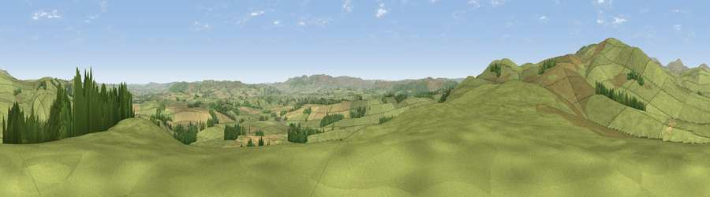

Viewpoint near Netherton
#8128 in England · top 30% of its area beats it · near NethertonThe view, rendered

A 360° render of this exact spot computed from the terrain model, tree cover and land cover — summer colours, afternoon light, calibrated against photographs of famous viewpoints. Real trees, hedges and buildings will differ in detail.
The panorama
Grey silhouette: terrain skyline in each direction (720 bearings, Earth curvature and refraction included). Dashed green: skyline with trees (+15 m) and buildings (+8 m) as obstacles. Blue strip: how far the ground is visible on each bearing.
Where the view opens
Wedge length = distance to the farthest visible ground on that bearing (vegetation-aware). Rings at 10, 25 and 50 km.
What fills the view
84% grassland · 9% cropland · 7% woodland
Angular shares of the visible panorama (visual magnitude), not map area. Landscape diversity 0.24 (0–1 Shannon).
Key numbers
More beautiful places nearby
The staircase of upgrades: each row has a higher view potential than everything closer. Driving times are estimates from straight-line distance, calibrated against real road routing — check an actual route before setting out.
| Place | Direction | Drive | Score |
|---|---|---|---|
| Viewpoint near Netherton | NW · 2 km | ~5 min | 75.7 |
| Viewpoint near Netherton | WSW · 2 km | ~5 min | 76.5 |
| Wether Cairn [Wholhope Hill] | WNW · 4 km | ~9 min | 80.7 |
| Viewpoint c12273_7856 | NW · 6 km | ~13 min | 83.7 |
| Viewpoint c12396_7887 | NNW · 11 km | ~20 min | 85.7 |
| Viewpoint near Chillingham | NE · 19 km | ~33 min | 88.1 |
| Long Side | SW · 109 km | ~133 min | 89.5 |
| Viewpoint near Easington | SE · 118 km | ~142 min | 90.2 |
55.38059, -2.04456 · source: screening · position refined by local search. Computed location — check access rights before visiting.